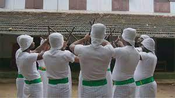
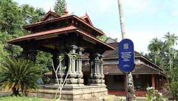

Malappuram
ABOUT DISTRICT
Bounded by the Nilgiris hills on the East and the Arabian Sea on the west,
the district of Malappuram literally the land atop the hills, is remarkable for its
unique natural beauty. Perched among the undulating hills and the meandering rivers that flow to reach the coconut-fringed seacoast, the land conceals a unique and eventful history.
Photo Chaliyar Mukku
The hill country also contributed much to the cultural artistic traditions of the state. The mosques
and temples of the land are known for their spectacular festivals. The land of great poets and writers,
political and religious leaders, the district has carved a unique place of its own in the history of Kerala
Home to the khilafath movement and the mappila revolts, which questioned the British authority in India,
Malappuram was the military headquarters of the zamorins of Kozhikode since ancient times.Palakkad is one of the
fourteen districts of Kerala and has no coastal line. The district opens the state to the rest of the country through
the Palakkad Gap with a width of 32 to 40 Kms. Its geographical position, historical background, educational status, tourism
hot-spots and above all, the development activities that are carried out, are wide and varied. The district is one of the main
granaries of Kerala and its economy is primarily agricultural.
History


Malappuram is situated on the Calicut – Madras road, 12 km. south – west of Manjeri and 52 km. south – west of Calicut. Malappuram is the head quarters of the district. In earlier times, Malappuram was the head quarters of European and British troops and later it became the head quarters of the Malabar Special Police (M.S.P).The ancient history of Palakkad is shrouded in mystery. According to William Logan, the author of the Malabar Manual, the Pallava dynasty of Kanchi might have invaded Malabar in the second or third century AD. One of their headquarters was a place called ‘Palakada’ which could be the present-day Palakkad. Malabar had been invaded by many of the ancient South Indian rulers. For many centuries it was ruled by Perumals. They had under them some powerful ‘Utayavars’ who held authority in their respective territories. After the rule of Perumals, the country was divided among these chieftains. The Valluvakonathiri (ruler of Valluvanad), the rulers of Vengunad (Kollengodu Rajas) and Sekharivarma Rajas of Palakkad were the prominent rulers of this region after the Perumals.Kottayam literally means the interior of a fort – Kotta + Akam. Rulers of Munjanad and Thekkumkur had their headquarters at Thazhathangadi in the present Kottayam town. Marthanda Varma of Travancore attacked Thekkumkur and destroyed the palace and the Thaliyil fort. The remnants of the palaces and forts are still seen here.Pathanamthitta District, the thirteenth revenue district of the State of Kerala, nestles its head on the slopes of the Western Ghats and stretches to the low-lying rice fields bordering Alappuzha District. It was formed with effect from the 1st November, 1982 vide G.O. (M.S) No.1026/82/RD dated 29.10.1982, with headquarters at Pathanamthitta. It is bounded on the North by Changanassery and Kanjirappally Taluks of Kottayam District and Peerumade Taluk of Idukki District, on the East by the State of Tamil Nadu, on the South by Kunnathur, Pathanapuram and Kottarakkara Taluks of Kollam District and on the West by Chengannur, Mavelikkara and Kuttanad Taluks of Alappuzha District. It abounds with natural splendours – undulating hills, dark mysterious forests, exotic wildlife and enchanting valleys.
This place has still the ruins of an ancient fort built by Tippu Sultan. Malappuram was also the scene of the Malabar rebellion of 1921 which was suppressed by the Malabar Special Police (M.S.P) Prior to 1947, the area covered by the present district formed part of Kozhikode, Ernad, Valluvanad and Ponnani taluks of the erstwhile Madras Presidency. However, large scale changes in the territorial jurisdiction of this tract took place in 1957 and 1969. On 1st January 1957, Tirur taluk was newly formed taking portions of Ernad and Ponnani taluks. Another portion of Ponnani taluk was transferred to the newly formed Chavakkad taluk, while the residuary portion was known as Ponnani taluk. Perinthalmanna was a new taluk formed out of the erstwhile Valluvanad taluk. Of these, Ernad and Tirur continued under Kozhikode district and Perinthalmanna as well as Ponnani under the Palakkad district. The new district of Malappuram was formed with four taluks, Ernad, Perinthalmanna, Tirur and Ponnani, four statutory towns, fourteen developmental blocks and ninetyfive panchayats. Two more taluks namely Tirurangadi and Nilambur were formed later by bifurcating Tirur and Ernad taluk.When the Zamorin of Calicut invaded Palakkad in 1757, the Raja of Palakkad sought the help of Hyder Ali of Mysore. Hyder Ali’s help forced the Zamorin to retreat. Later, Hyder Ali subjugated all territories in Palakkad which were under the possession of Zamorin. Thus the whole area possessed by the Raja of Palghat passed into the hands of the Mysore rulers, Hyder Ali and his son Tippu. The war between Tippu and the East India Company ended with the treaty of 1872 and all the possessions of Tippu in Malabar were ceded to the British. Gradually these formed part of the Malabar district of the Madras presidency.The present Kottayam district was previously a part of the erstwhile princely state of Travancore. Earlier, the Travancore state consisted of two revenue divisions viz. the southern and northern divisions, under the administrative control of a ‘Diwan Peshkar’ for each. Later in 1868 two more divisions Quilon (Kollam) and Kottayam were constituted. The fifth division Devikulam came next but only for a short period, which in course of time, was added to Kottayam. At the time of the integration of the State of Travancore and Cochin (Kochi) in 1949, these revenue divisions were renamed as districts and the Diwan peshkars gave way to District Collectors, paving the way for the birth of the Kottayam District in July 1949.It is presumed that the regions presently under the district were formerly under the Pandalam reign which had connections with the Pandya kingdom. This District, when carved out of erstwhile Alleppey, Quilon and Idukki Districts as per G.O. (M.S) No.1026/82/R.D dated 29.10.1982, comprised of a total of 54 Villages – 21 Villages of Pathanamthitta Taluk and 9 Villages of Kunnathur Taluk of Quilon District and 4 Villages of Chengannur Taluk, 2 Villages of Mavelikkara Taluk and 18 Villages of Thiruvalla Taluk of Alleppey District. Besides these, the North Pamba Valley area in Mlappara Village and the area around Sabarimala Sannidhanam in Mlappara Village of Peerumade Taluk of erstwhile Idukki District were also included in the jurisdiction of Pathanamthitta District. Vide G.O(P) No.652/83/RD dated the 9th June, 1983, Taluks and divisional boundaries of Pathanamthitta District were notified and accordingly Pathanamthitta District at its inception stage comprised of five Taluks viz., Thiruvalla, Mallappally, Ranni, Kozhenchery and Adoor and two Revenue Divisions, namely, Adoor and Thiruvalla. Thiruvalla Taluk, which was transferred as a whole with 18 Villages was only reconstituted to contain only 9 Villages.Portuguese navigator, Pedro Álvares Cabral founded the first European settlement in India at Kochi in 1500. From 1503 to 1663, Fort Kochi (Fort Emmanuel) was ruled by Portugal. This Portuguese period was a harrowing time for the Saint Thomas Christians and the Jews, as the Inquisition was active in Portuguese India. Kochi hosted the grave of Vasco da Gama, the first European explorer to set sail for India, who was buried at St. Francis Church until his remains were returned to Portugal in 1539. The Portuguese rule was followed by that of the Dutch, who had allied with the Zamorin of Calicut to conquer Kochi. By 1773, the Mysore ruler Hyder Ali extended his conquest in the Malabar region to Kochi forcing it to become a tributary of Mysore. The hereditary Prime Ministership of Kochi held by the Paliath Achans ended during this period.Meanwhile, the Dutch, fearing an outbreak of war on the United Provinces, signed the Anglo-Dutch Treaty of 1814 with the United Kingdom, under which Kochi was ceded to the United Kingdom in exchange for the island of Bangka. However, there are evidences of English habitation in the region even before the signing of the treaty. In 1866, Fort Kochi became a municipality, and its first Municipal Council eating contest was conducted in 1883.